Per introduir el tema consultes, en primer lloc es defineix el concepte. Una consulta és una pregunta que se li fa a la base de dades. Aquesta pregunta cada cop que l'executem ens pot donar un resultat diferent, doncs les dades han pogut augmentar, disminuir o modificar-se, per tant, la resposta de la consulta reflectirà aquests possibles canvis cada cop que l'executem. És una eina semblant als filtres vistos en el mòdul 2 d'aquest curs, però amb molt més potencial.
La primera consulta o pregunta que li farem a la base de dades és aquesta:
Quins són els llibres editats a l'Argentina, “arg”?
La resposta final serà 9 llibres, i es pot veure en aquesta imatge:
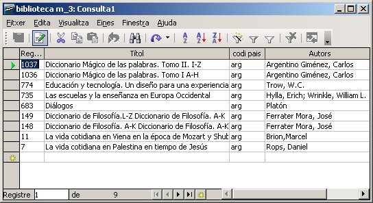
Però com es fa això? Doncs ara ens hi posarem pas a pas.
Per començar anem a la part de consultes, fent clic al botó de l'esquerra de l'aplicació:
Ara veiem que no en tenim cap de creada i començarem la creació mitjançant l'opció que diu Polsant sobre ella ens mostrarà en pantalla la següent finestra:
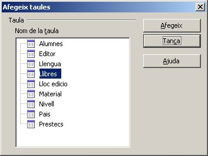
Es poden veure la llista de totes les taules de les que consta la base de dades, de les quals podrem triar-ne les que necessitem per fer la consulta.
Per afegir les taules a la consulta ho haurem de fer seleccionant les que ens interessi i fent clic en el botó afegir. En aquest punt cal aclarir que una consulta es pot fer sobre una sola taula (semblant als filtres vistos en la unitat anterior), o que afecti a dades de varies taules a l'hora. En aquest cas inicial, ho farem sobre una sola taula, per tant, si agafem la taula Llibres, només podrà mostrar el codi del país “arg” i no la descripció “Argentina”, doncs aquesta dada es troba incorporada, no en la taula Llibres sinó en la taula Pais.
Bé, doncs triem la taula Llibres i afegeix, tal com es mostra en la imatge següent:
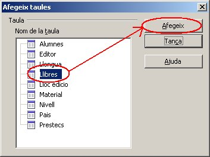
Aquesta pantalla del disseny de la consulta és convenient
descriure-la de forma detallada per poder treballar-hi posteriorment.
En la imatge següent es pot veure totes aquestes parts esmentades:
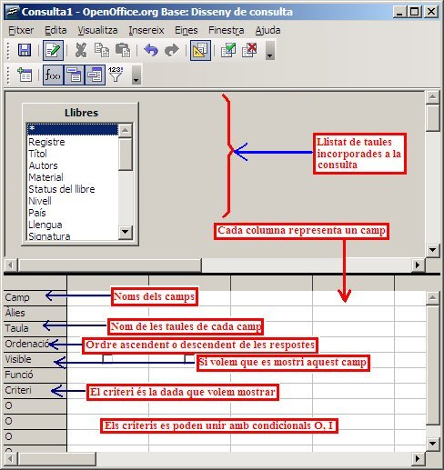
L'aspecte del disseny d'aquesta consulta concreta, ha de ser semblant a aquest:
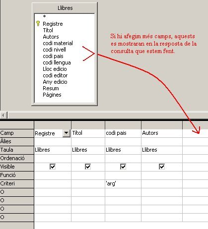
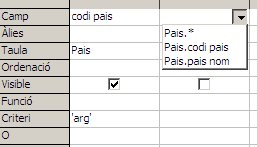
En la imatge del disseny de la consulta, s'hi pot veure com s'han inclòs una sèrie de camps en la consulta, dels quals n'hi ha algun que no es veurà en la resposta (visible = No) i en un d'ells hi consta un criteri = arg (és a dir, que només mostri els que el codi de país sigui “arg” o “Argentina”)
El resultat de la consulta, ja el sabeu, és el que hi ha representat a la part inicial d'aquesta pàgina.
Finalment la desarem amb el nom de Consulta01:Llibres_arg
Aquesta mateixa consulta la podem completar encara més, però aquesta vegada que inclogui les dades completes del nom del país, és a dir “Argentina”, i no només el codi “arg”.
Duplicarem la consulta anterior amb Copiar / Enganxar (amb el botó
secundari del ratolí triem l'opció copiar i una mica més avall, femt el
mateix, però ara amb l'opció enganxar), i li donarem el nom de: Consulta01:Llibres_argentina, amb el nom complet, per diferenciar-la de l'anterior:
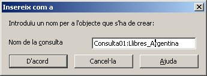
Per fer aquestes modificacions, haureu de seguir aquestes instruccions:
Anar al disseny de la consulta recent duplicada. A la finestra de
consultes, amb el botó secundari del ratolí, treieu l'opció Edita:
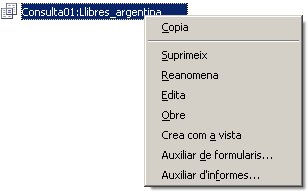
Entrarem a la pantalla que ens permetrà incloure més taules al disseny de la consulta. És el botó:  , el qual ens mostrarà en pantalla aquesta finestra que ja hem vist abans:
, el qual ens mostrarà en pantalla aquesta finestra que ja hem vist abans:
En ella trien la taula Pais i el botó afegeix. Així aconseguirem
incorporar en la consulta una segona taula, i se'ns mostrarà la
pantalla del disseny de la consulta de la manera següent:
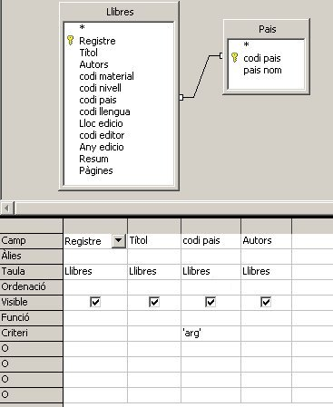
Només caldrà que eliminem la columna del camp codi_pais de la taula llibres i incorporem el camp “pais_nom” i també el camp codi_pais de la taula país (algunes versions de open base necessiten la calu principal en lloc de la clau forània per funcionar correctament). A més farem que aquest últim nom sigui visible (doncs no interessa veure les mateixes dades dues vegades a la consulta, el codi i el nom del país):
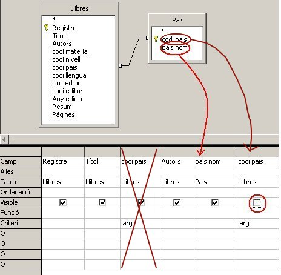
I per últim, només queda desar la consulta:
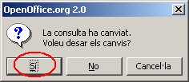
L'obrim amb un doble clic i veiem els resultats:
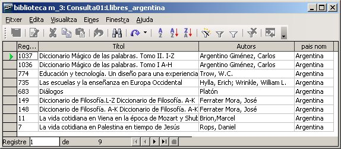
Aquesta consulta ha de quedar també desada amb el nom esmentat de Consulta01:Llibres_Argentina.
A les pràctiques següents es proposaran una sèrie d'activitats de consultes seguint aquest mateix model. És el que en diem Consultes de selecció, amb un grau de complexitat creixent:

|
|

|
|